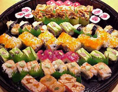

Take Away

If you wish to eat fine and healthy food at home or in your office, Onimusha's menu can be prepared for takeaway! In addition, a delivery service is also available anywhere within 2 blocks of Chiefly Tower for dinner. Both are great for meetings, overtime work, parties ... and can be tailored to your needs. Takeaway orders must be received before 12pm for lunch and 10pm at dinner.
Conditions
- Please order before 12pm for lunch (Takeaway only).
- Please order before 9:30pm for dinner (Delivery and Takeaway).
- Please give us a call when you order by Fax for confirmation.
- Our standard a la carte menu is not available.
- Delivery is available anywhere within 2 blocks from Chifley Plaza.
- From $20.00, no delivery fee.
- We charge cash on delivery or minimum $20.00 for credit card payments.
- Please contact us for details of special delivery.
Lunchtime Take Away Order
From 1 June 2006, please place your lunch take away order before 12pm. We will not be able to take any order after 12:00pm, as the restaurant is busy between 12pm to 2:30pm.Thank you very much for your understanding. We are sorry for the inconvenience that may cause you.